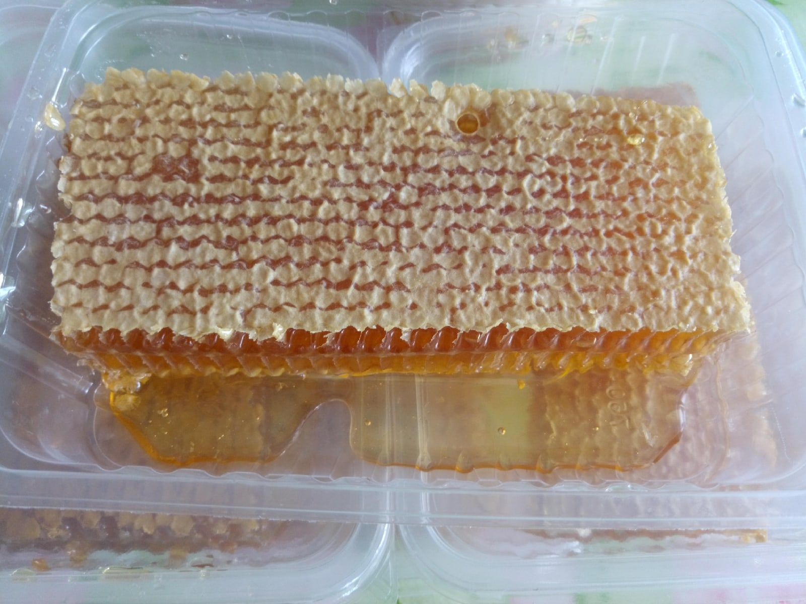
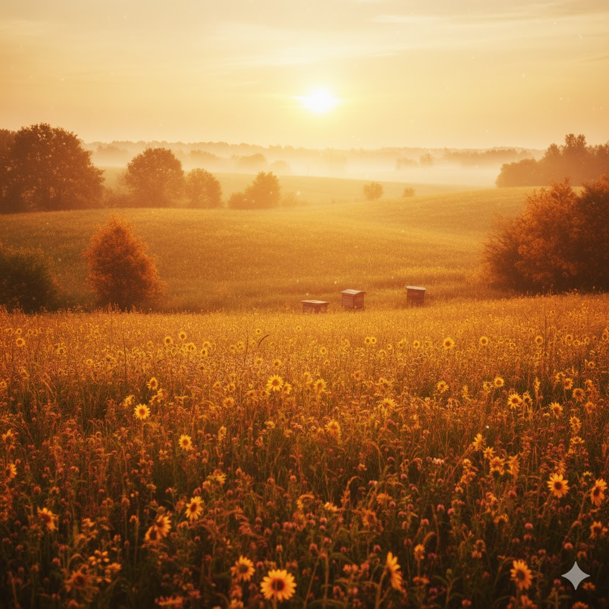
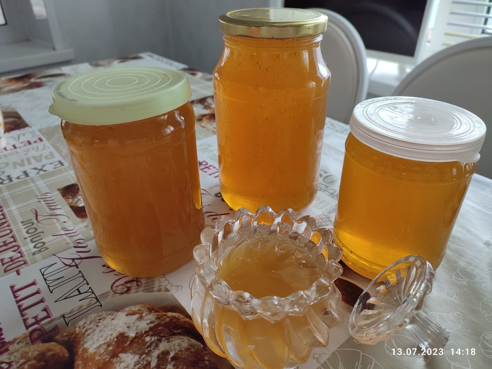

Башкирский мёд из села Красноусольский
Натуральный мёд прямо с нашей пасеки — без сахара и добавок. Собран с лугов и лесов Южного Урала.


100% натурально
Без сахара, без искусственных добавок — только чистый башкирский мёд.

Экологично
Пасека расположена в экологически чистом районе Красноусольского.

Разные сорта
Липовый, цветочный, гречишный, сотовый и натуральные продукты пчеловодства.